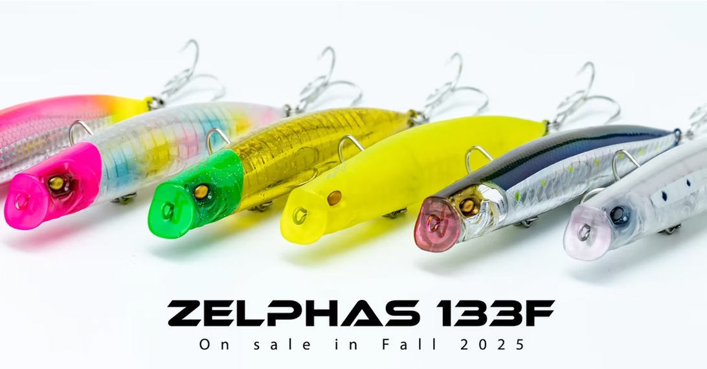
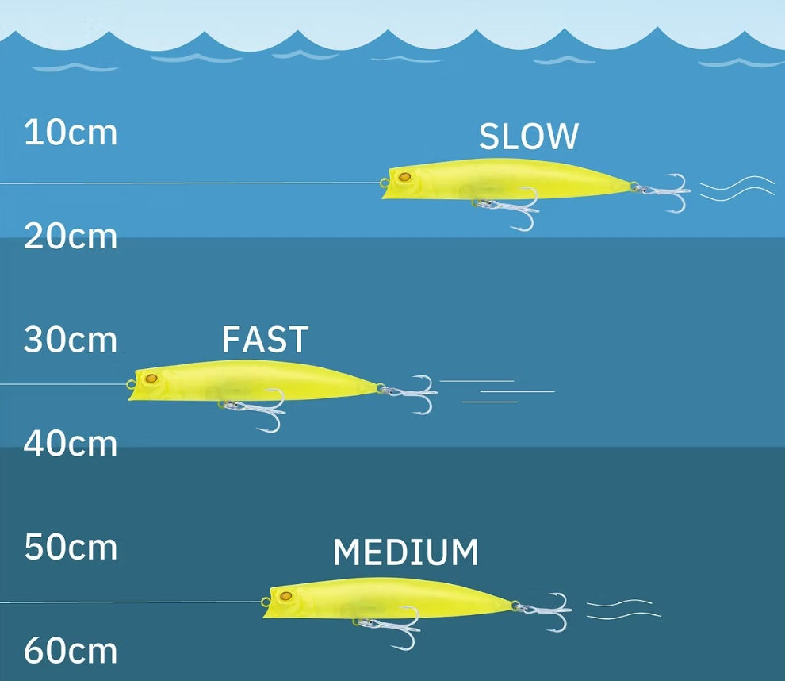
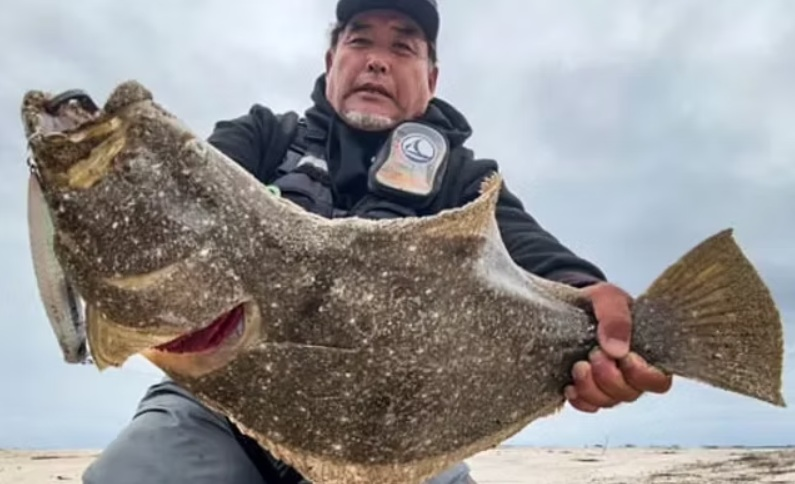
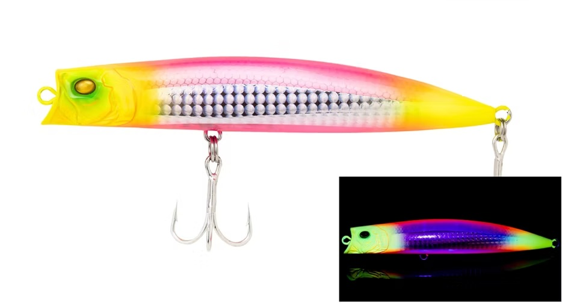
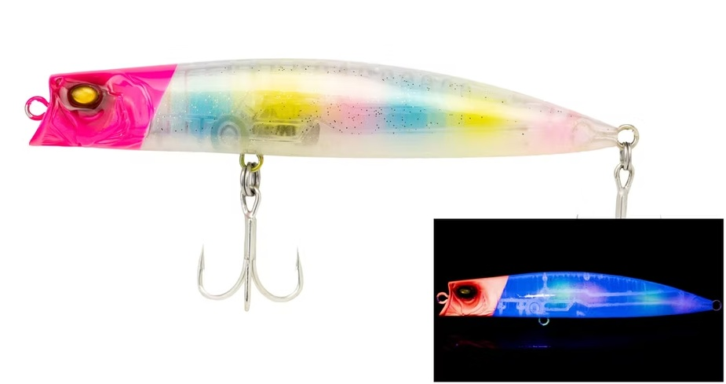
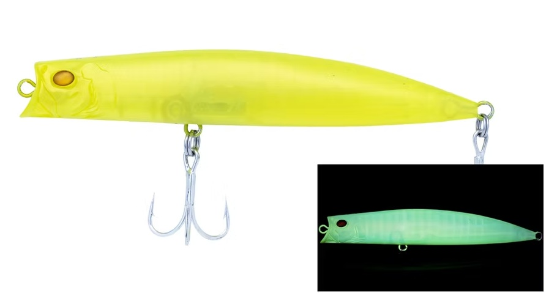
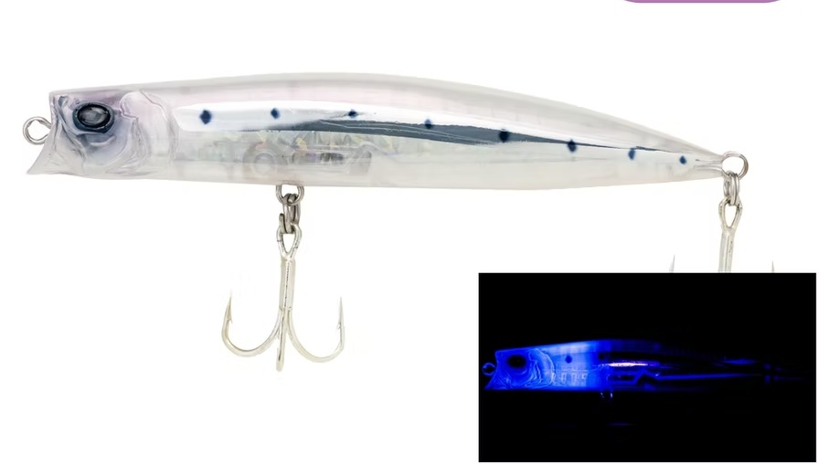

ZELPHAS(ゼルファス) 133F
ZELPHAS(ゼルファス) 133FはADUSTAのフローティングミノーです。
飛距離・アクション・レンジ、その全てを大物を釣るために磨き上げた次世代リップレスミノー

画像出典:ADUSTA公式HP
スペック
- メーカー
- ADUSTA
- 長さ
- 133 mm
- 重さ
- 29 g
- フック
- F#2 R#3
- リング
- F#5 R#4
- レンジ
- 10～70cm
- タイプ
- ミノー
- 沈下タイプ
- フローティング
- アクション
- 可変アクション
- ターゲット
- シーバス
- 価格
- 2860円(税込)
- 発売日
- 2025-09-27
▼今すぐチェック
ゼルファス133Fの特徴
もう一投したくなる、可能性を広げるリップレスミノー。
-
最大80mオーバーの圧倒的な飛距離
同クラス最大級のタングステンボールを採用した重心移動構造と空気抵抗を極限まで抑えた形状で、平均70m、最大で80mを超える飛距離を実現。
-
リトリーブスピードによる可変アクションとレンジ設定
独自の内部構造「ゼノスパイン」により、巻きスピードを変えるだけで、10cm〜70cmの範囲でアクションとレンジが変化します。
スローでは「浮遊感のあるアクション」、ミディアムでは「ウォブンロール」、ファストでは「スラローム」へと変化し、1本のルアーでターゲットや状況に合わせた多彩な演出が可能です。 -
着水直後の優れた立ち上がり性能
着水と同時に水を掴んで泳ぎ出すレスポンスの良さを実現しており、狙ったポイントを即座に攻略できます。
ゼルファス133Fの使い方
ゼルファス133Fの基本的な使い方は、基本的にはただ巻き。
「リトリーブスピード（巻き速度）の調整」でアクションとレンジを使い分けれます。
スローリトリーブ（レンジ：10〜20cm）
水面直下を漂うような「浮遊感のあるアクション」を発生させます。弱ったベイトを演出するのに最適。
ミディアムリトリーブ（レンジ：40〜60cm）
「ウォブンロール」アクションに変化します。水を強く押し、広範囲の大型魚に存在をアピールします。
ファストリトリーブ（レンジ：30〜40cm）
左右へダートするような「スラローム（パニックアクション）」を発生させます。
超早巻きでもアクションが破綻しにくいため、魚のリアクションバイトを狙う際に有効です。

画像出典:ADUSTA公式HP
ゼルファス133Fの得意な状況
強風や向かい風の状況でも、空気抵抗の抑えた形状設計で飛距離が出ます。
ほかのミノーでは届かないような場所にアプローチできるため、サーフなどの広大なフィールドでの使用がオススメです。
釣れるワンポイント
ゼルファスは巻きスピードでレンジが変わるので、巻きスピードを意識しよう。
一度投げてヒットしなくても、巻きスピードを変えて同じコースをトレースすることで、釣れることも！
ルアーチェンジしなくても1つでルアー3つ分のアクションで釣りの手返しが良くなります。

画像出典:ADUSTA公式HP
人気カラー

ドーンエッジマヅメ時のような高活性時や澄み潮のデイゲームに効くアピールカラー。

ネオンキャンディグローとUVの両立で座布団ヒラメに最適。オオニベやサワラ狙いにもオススメ。

ファントムチャートナイトゲームでもっとも視認性が高く、魚を寄せて食わせる力に長けています。

幻光シラス系の透明小型ベイトが群れているシチュエーションで強烈な威力を発揮するカラー
画像出典:ADUSTA公式HP
ゼルファス133Fに似ているルアー
- ここに手動で追記してください。